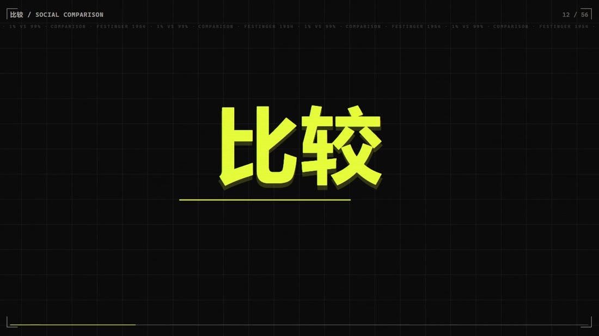
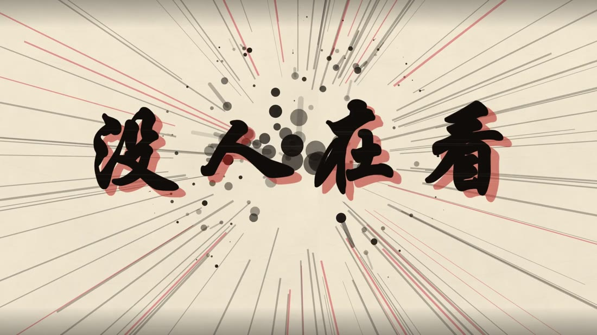
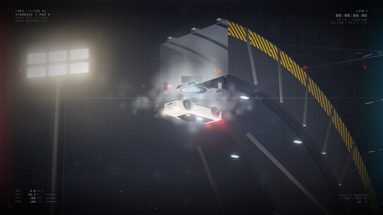
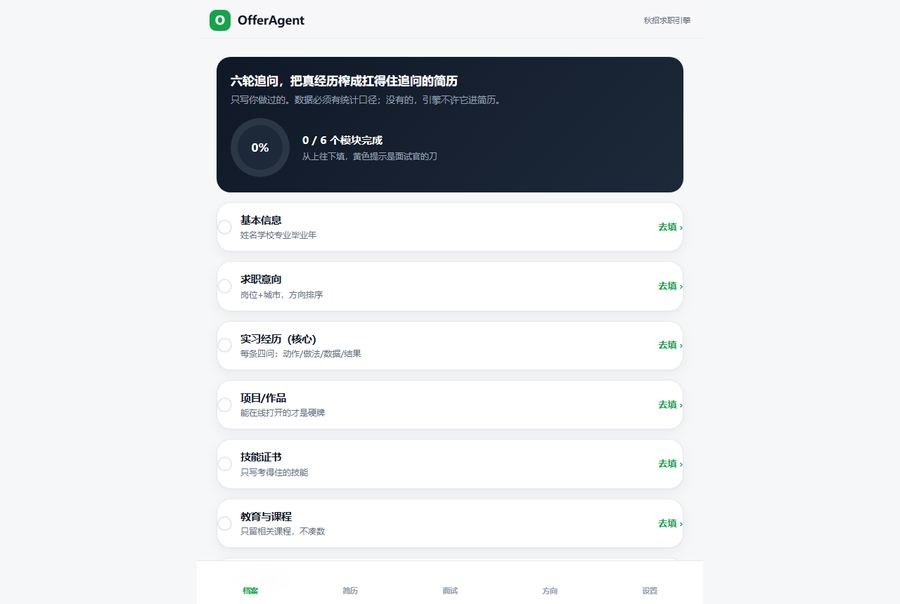
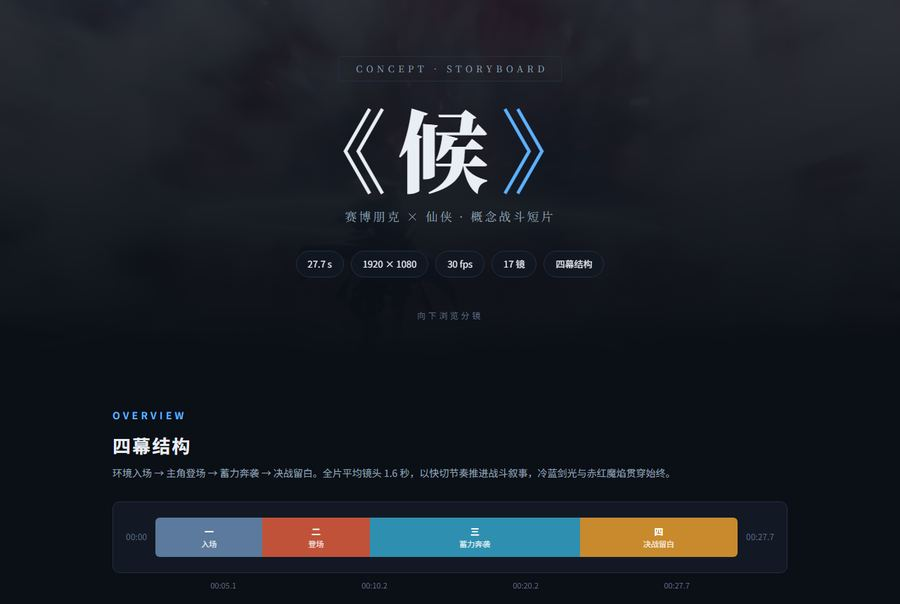
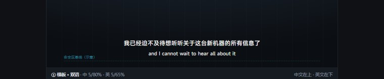
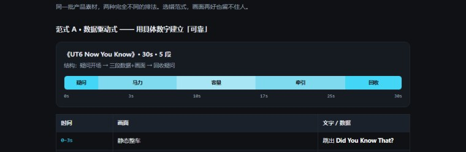

新作 · 快剪卡点
01 / 16
比较
81 秒 56 个镜头，把「社会比较」讲成一次情绪反转。切点全落在 0.352 + k×1.0846 这张表上，音乐整首原样播完。上一版被说节奏太慢，这一版我没加时长，把后半段整段重做，顺手修了白底白字那个 bug。
2431 帧56 个镜头切点 0.352+k×1.0846第二版重做
看这条片子
Selected works · 项目作品集
把内容生产从「凭手感」变成「填参数」。选题、脚本、制作、发布、复盘， 每一站我都留下能交接的东西，一份 SOP，一个能试用的工具，或者一条点开就看的片子。 这个文件夹里的 16 件作品，双击就能打开，不需要联网，也不需要部署。
01 — Selected
05 / 16
四部短片全部由代码逐帧生成，没有拍摄、没有素材库、没有生成模型。鼠标停在标题上，右边可以直接试看。



02 — Archive
显示 16 / 16
影像、工具、文档三类。标了「可试用」的是真能跑起来的东西，不是截图。
81 秒 56 个镜头，把「社会比较」讲成一次情绪反转。切点全落在 0.352 + k×1.0846 这张表上，音乐整首原样播完。上一版被说节奏太慢，这一版我没加时长，把后半段整段重做，顺手修了白底白字那个 bug。
52 秒水墨卡点。眼睛，镜子，灯，三个意象讲完一个心理学概念，drop 处全屏反白、墨点炸开。
81 秒纯代码科普短片，把「难」拆成 人 × 岗 × 时间 的乘法，33 个卡点全落在 120 BPM 网格上。七张关键帧我最开始是按猜想起的名，错了两处，逐帧看完才改对。
说一句「后天下午面试」就自动排进日历。带 LLM 输出质量门，不合格自动打回重试，全程留痕。装了 sw.js，断网也能开。
从 0 到 1 定义需求与流程，把合规判断写进代码而不是靠人记。4 条违禁词规则、27 条可修复表述替换表、19 条真实爆款脚本库，改规则不用改代码。
AI 每日规划与复盘。没填 API Key 时走内置 Mock 引擎，全流程照样跑得通，eval 行为一致。
不止查违禁词。三级风险判定加资质校验，回答的是「这句话到底能不能发」。15 条规则外置成 JSON，改规则不用改代码。

可试用 · 决策 10 / 16多维度给 offer 打分对比，把「凭感觉拍板」变成可以复盘的表格，带 AI 追问模拟。

过程 · 分镜 11 / 16一条 AI 短片从文字分镜到成片的推演过程，看得出想法是怎么变成镜头的。

流程文档 · 实习期 12 / 16把「凭手感调字幕」变成「填参数」，三种版式的字号、缩放、坐标全固定，附剪映落地五步与交付清单。

流程文档 · 实习期 13 / 16六段式结构让脚本可交接，制作方向、时长、音乐方向、分镜时间轴、剪辑节奏，含两种范式的逐秒拆解。
把「这条为什么爆」拆成可复用的判断顺序，而不是事后叙事。实习期间给素材组定的产出方法。
从选题到投放的流程与验收口径，谁在哪一步交什么、什么算合格，目标是换人执行也不漂移。
早期做的一份游戏系统与关卡拆解合集。分析方法（拆结构 → 找约束 → 给改法）和内容运营是同一套。
没有匹配的作品，换个关键词试试。
03 — Method
这 16 件事背后是同一套动作，把模糊的手感拆成参数，把参数写成能验收的文档。
做内容的判断力，
最终体现在「换个人也能做对」上。
PARAM / 01
把「凭手感」的环节变成可填的参数，字幕的字号坐标、镜头的切点时间、爆款的判断顺序。能写成数字的，就不靠记忆。
VERIFY / 02
每条片子自己一帧一帧看过，白底白字、错帧、字幕越界，模型不会替你发现。验收标准在我这边，不在生成端。
HANDOFF / 03
每件产出都留一份能直接交给下一个人用的东西，SOP、预设、工具，或者一条点开就看的片子。没有交接物，等于没做完。
04 — About
2027 届 · 教育技术学
我是金佳信。求职方向是 AI 内容运营 / AIGC 运营，
一个既懂内容结构、又能把流程写成工具的人。
教育技术学专业出身，所以习惯先问「这个东西怎么被学会」，再问「怎么被做出来」。上面这些东西看起来分散，短片、Agent、SOP、合规检查，但动作是同一个，找到会漂移的那一环，把它固定成参数或工具。
四部短片全部是 vibecoding 完成的，代码由 AI 生成，但概念、结构、镜头表、节奏判断、以及「第二版推倒重来」的决定是人做的。我愿意把这条分工写清楚，因为它就是我理解 AIGC 运营的方式。
这个作品集本身也是一个作品，零 CDN、零构建、双击即开，断网也能看。
离线优先：所有作品都是本地文件，file:// 双击即开，不需要服务器、不需要构建。
体积：整包约 53 MB，其中四部短片为分发压缩版（H.264 CRF 25 / CRF 28），母版留在项目源目录。
首屏：由四部片子剪成的 16 秒无音轨 showreel，加载失败时自动退回静态封面。
依赖：动效只用到本地 GSAP / Lenis，缺失时内容与链接仍然完整可用。